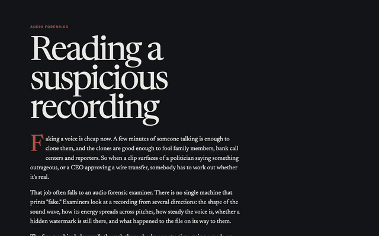
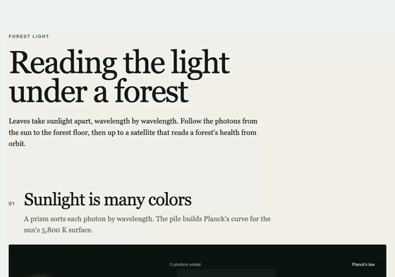
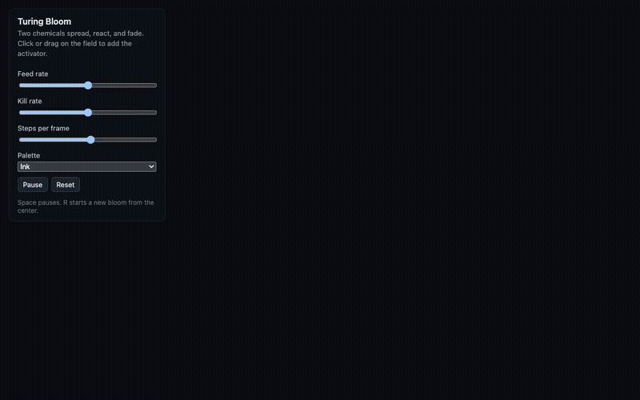
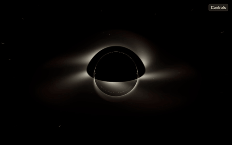
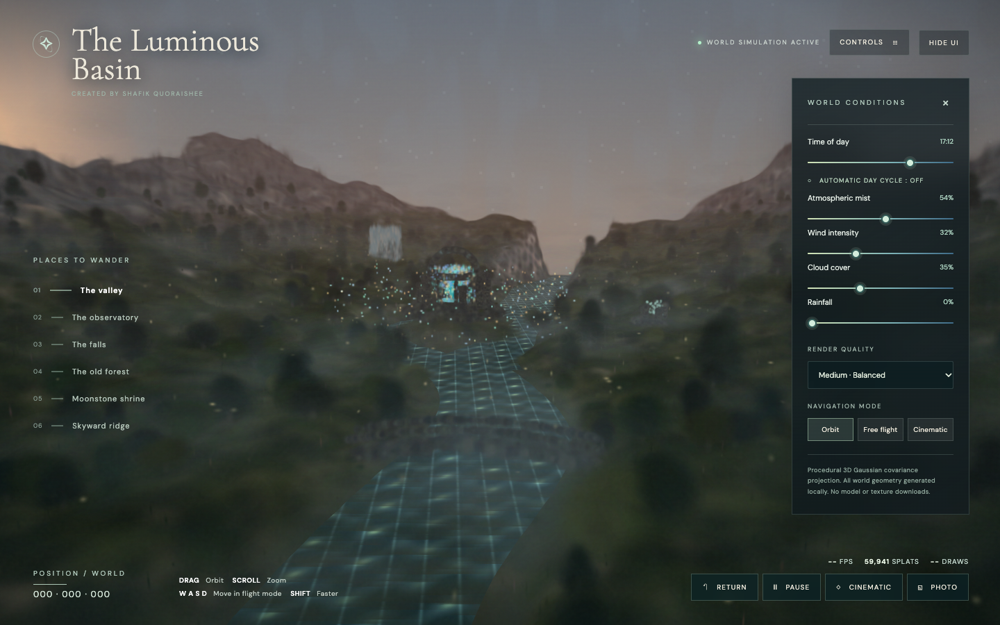
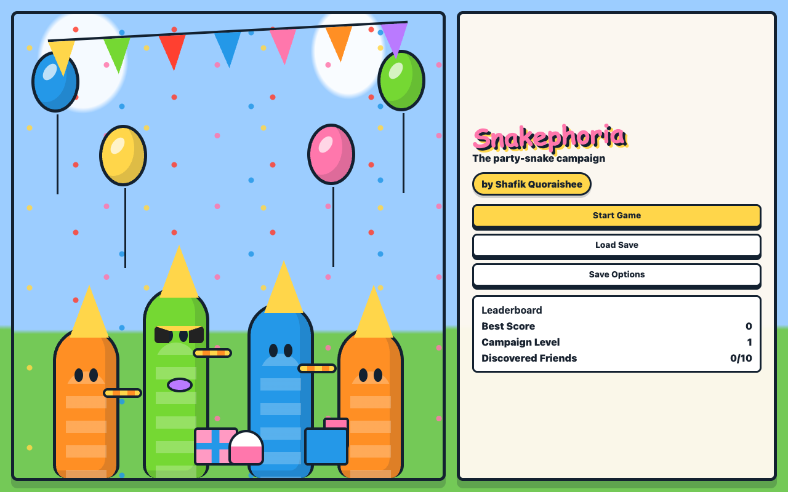

Prototypes
Browser experiments: illustrated explainers, simulations, a ray tracer, a splat landscape and a game. Each one runs in the page, with no install.

Reading a Suspicious Recording
How an audio forensic examiner checks whether a recording is real, from the waveform and spectrogram to watermarks and file history.

Reading the Light Under a Forest
Sunlight followed into a forest one photon at a time, from a prism to a leaf to the dim, far-red light on the forest floor.

Turing Bloom
Gray-Scott reaction-diffusion, the chemistry behind spots and stripes on animals, in WebGL2.

Photon Ring
A ray tracer for a spinning black hole, with a tour of the M87* and Sagittarius A* results.
Faraday Quasicrystal
Faraday waves on a shaken fluid, from stripes and squares to quasicrystal patterns.

The Luminous Basin
Trees, rivers, ruins and a floating crystal built from Gaussian splats, with time of day, fog, wind and rain.

Snakephoria
A party-snake game: grow a cake chain across 21 levels and beat the bosses on the way to the finale.